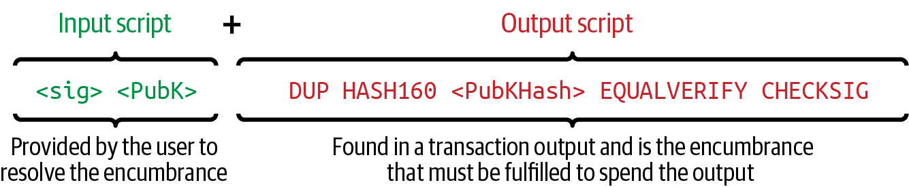
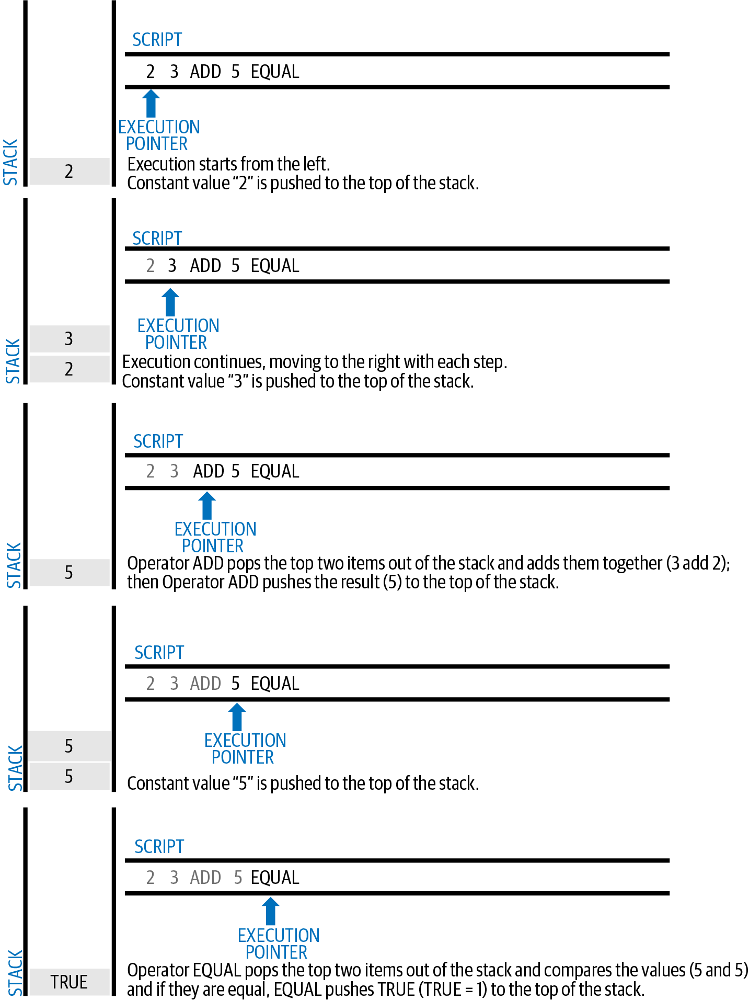
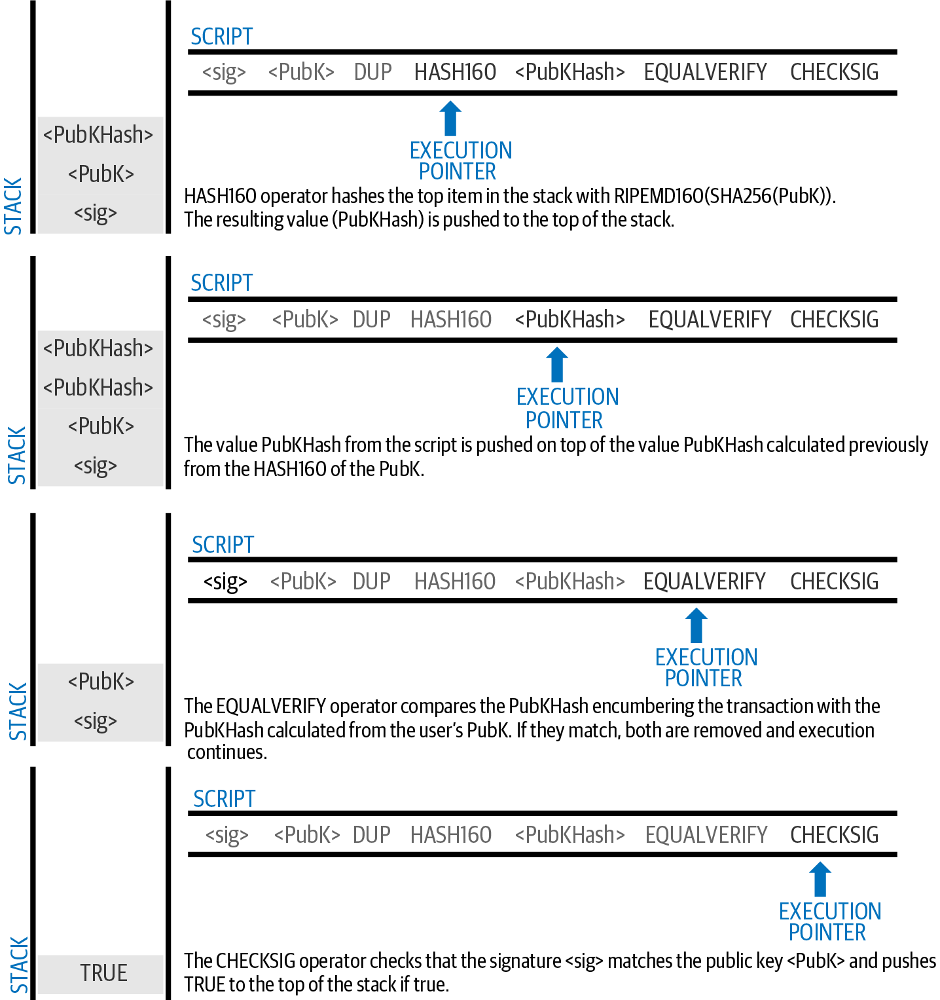
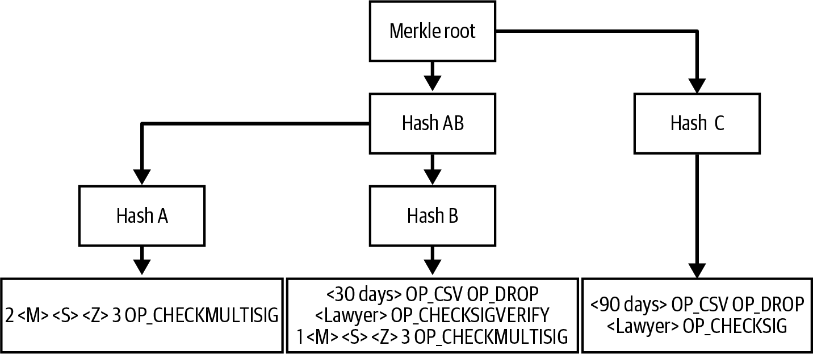
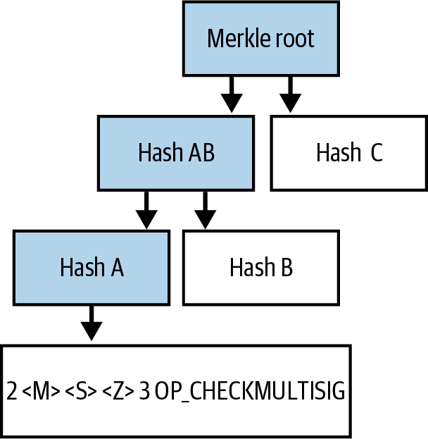
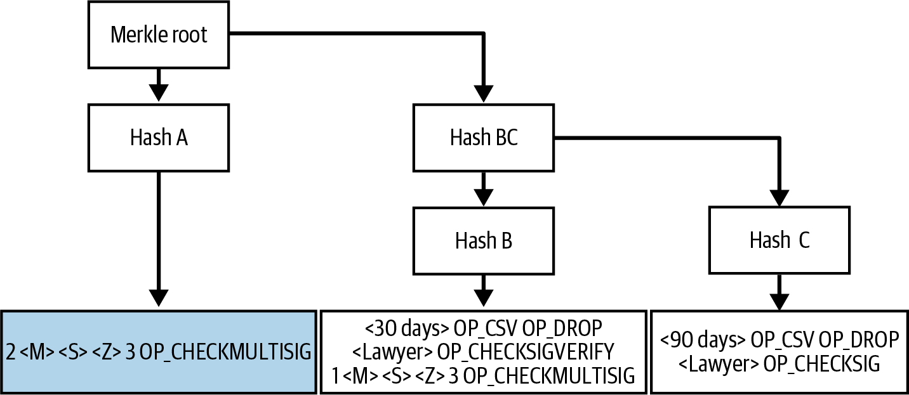
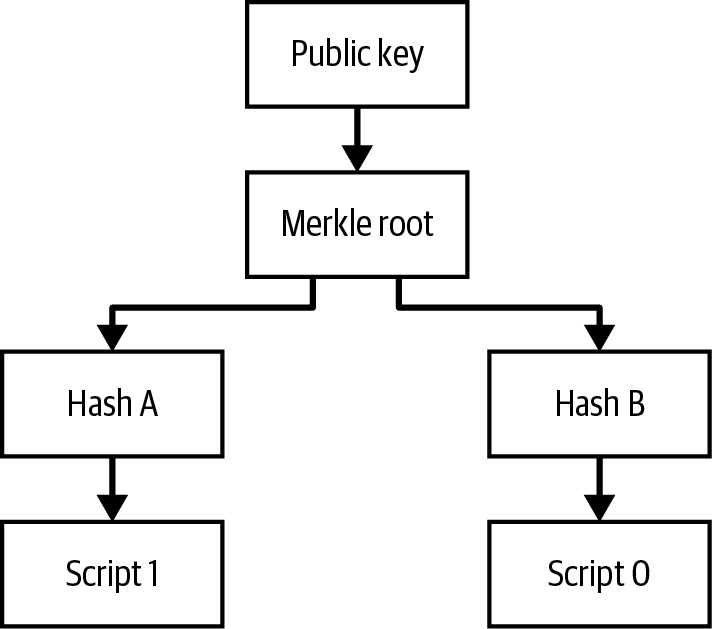

授权与认证
当你收到比特币时，你必须决定由谁拥有花费它们的权限，这称为_授权_。你还必须决定全节点如何把获得授权的花费者与其他人区分开来，这称为_认证_。你的授权指令以及花费者的认证证明会被成千上万个独立的全节点验证，它们都需要得出相同的结论：某次花费是经过授权与认证的，包含该花费的交易才会被认为有效。
最初描述比特币时使用公钥来进行授权。Alice 通过把 Bob 的公钥放入一笔交易的输出来向 Bob 付款。认证则由 Bob 以签名的形式提供，该签名承诺了一笔花费交易，例如从 Bob 到 Carol。
实际最初发布的比特币版本为授权与认证提供了一种更灵活的机制。此后的改进只是让这种灵活性更进一步。在本章中，我们将探讨这些特性，并看看它们最常见的用法。
交易脚本与脚本语言
最初版本的比特币引入了一种新的编程语言，叫做 Script，这是一种类 Forth 的基于栈的语言。放在输出中的脚本以及花费交易中所用的传统输入脚本，都是用这种脚本语言写成的。
Script 是一种非常简单的语言。它只需要极少的处理，无法轻易做到现代编程语言能做到的许多复杂事情。
当传统交易还是最常用的交易类型时，比特币网络上处理的大多数交易都采取“付款到 Bob 的比特币地址”这种形式，使用一种叫做 P2PKH（pay to public key hash）的脚本。然而，比特币交易并不局限于“付款到 Bob 的比特币地址”这种脚本。事实上，脚本可以被写来表达各种各样复杂的条件。为了理解这些更复杂的脚本，我们必须先理解交易脚本与 Script 语言的基础。
在本节中，我们将演示比特币交易脚本语言的基本组成，并展示如何用它来表达花费条件，以及这些条件如何被满足。
|
比特币交易的验证并不基于一种静态模式，而是通过执行一种脚本语言来完成。这种语言可以表达几乎无限多种条件。 |
非图灵完备
比特币交易脚本语言包含许多操作符，但在一个重要方面被刻意限制——除了条件流程控制以外，没有循环或复杂的流程控制能力。这确保了该语言不是_图灵完备_的，意味着脚本具有有限的复杂度与可预测的执行时间。Script 并不是一种通用编程语言。这些限制确保该语言无法被用来制造无限循环或其他形式的“逻辑炸弹”，从而避免被嵌入交易中对比特币网络发起拒绝服务攻击。请记住，每一笔交易都会被比特币网络上的每一个全节点验证。受限的语言可以防止交易验证机制被当作漏洞利用。
无状态验证
比特币交易脚本语言是无状态的，也就是说脚本执行之前没有任何状态、执行之后也不会保存任何状态。执行一段脚本所需的全部信息都包含在脚本本身和执行该脚本的交易之中。脚本会在任何系统上可预测地以相同方式执行。如果你的系统验证了一段脚本，你可以确信比特币网络中其他任何系统也都会验证通过该脚本，这意味着一笔有效的交易对所有人都是有效的，并且所有人都知道这一点。这种结果的可预测性是比特币系统的一项根本好处。
脚本构造
比特币的传统交易验证引擎依赖脚本的两个部分来验证交易：输出脚本与输入脚本。
输出脚本指定了将来花费该输出时必须满足的条件，例如谁被授权花费该输出以及他们将如何被认证。
输入脚本是一段满足输出脚本中所设条件、从而允许该输出被花费的脚本。输入脚本是每个交易输入的一部分。在传统交易中，绝大多数情况下输入脚本包含由用户钱包以其私钥生成的数字签名，但并非所有输入脚本都必须包含签名。
每个比特币验证节点都会通过执行输出脚本与输入脚本来验证交易。正如我们在 [c_transactions] 中看到的，每个输入都包含一个 outpoint，引用之前一笔交易的输出。该输入还包含一段输入脚本。验证软件会复制该输入脚本，取出该输入所引用的 UTXO，并从该 UTXO 中复制出输出脚本。然后将输入脚本与输出脚本一起执行。如果输入脚本满足了输出脚本的条件，则该输入有效（见 输出脚本与输入脚本的分离执行）。所有输入都作为整笔交易整体验证的一部分独立地被验证。
请注意，上述步骤涉及对所有数据进行复制。之前的输出与当前输入中的原始数据从未被修改。特别是，之前的输出是不可变的，并且不会因为对其花费的失败尝试而受到影响。只有一笔正确满足输出脚本条件的有效交易才会使该输出被视为“已花费”。
组合输入脚本与输出脚本以评估交易脚本。 展示了最常见的传统比特币交易类型（付款到公钥哈希）的输出与输入脚本示例，并展示了在验证之前由这两段脚本拼接所得到的组合脚本。

脚本执行栈
比特币的脚本语言被称作基于栈的语言，因为它使用一种叫做_栈_的数据结构。栈是一种非常简单的数据结构，可以想象为一摞卡片。栈有两个基本操作：push（压入）和 pop（弹出）。Push 把一项数据放在栈顶。Pop 把栈顶的那一项数据移除。
脚本语言通过从左到右处理每一项来执行脚本。数字（数据常量）会被压入栈中。操作符会从栈中弹出一项或多项参数，对它们进行运算，并可能将结果压入栈中。例如，OP_ADD 会从栈中弹出两项，将它们相加，并把得到的和压入栈中。
条件操作符会评估一个条件，产生 TRUE 或 FALSE 的布尔结果。例如，OP_EQUAL 从栈中弹出两项，如果它们相等则压入 TRUE（TRUE 用数字 1 表示），否则压入 FALSE（用 0 表示）。比特币交易脚本通常包含一个条件操作符，以便能够产生表示交易有效的 TRUE 结果。
一个简单的脚本
现在让我们把已经学到的关于脚本和栈的知识应用到一些简单的示例中。
正如我们将在 比特币的脚本验证执行简单算术。 中看到的，脚本 2 3 OP_ADD 5 OP_EQUAL 演示了算术加法操作符 OP_ADD，它把两个数字相加并把结果放在栈上，随后是条件操作符 OP_EQUAL，用于检查所得的和是否等于 5。为简洁起见，本书示例中有时会省略 OP_ 前缀。关于可用脚本操作符和函数的更多细节，请参见 Bitcoin Wiki 的 script 页面。
虽然大多数传统输出脚本引用的是一个公钥哈希（本质上即一个传统的比特币地址），从而要求所有权证明才能花费资金，但脚本并不必如此复杂。任何能让结果为 TRUE 的输出脚本与输入脚本的组合都是有效的。我们前面作为脚本语言示例所用的简单算术也是一个有效的脚本。
把算术示例的一部分用作输出脚本：
3 OP_ADD 5 OP_EQUAL
它可以由一笔包含如下输入脚本的交易输入来满足：
2
验证软件会把脚本组合起来：
2 3 OP_ADD 5 OP_EQUAL
正如我们在 比特币的脚本验证执行简单算术。 中看到的，当执行这段脚本时，结果为 OP_TRUE，使该交易有效。虽然这是一个有效的交易输出脚本，但请注意，由此产生的 UTXO 可以被任何具备算术能力、知道数字 2 能满足该脚本的人花费。

|
当栈顶结果为 TRUE（任何非零值）时，交易有效。 当栈顶结果为 FALSE（零值或栈为空），或脚本执行被某个操作符显式中止（例如 VERIFY、OP_RETURN），或者脚本在语义上无效（例如包含一个未被 OP_ENDIF opcode 终结的 OP_IF 语句）时，交易无效。详情请参见 Bitcoin Wiki 的 script 页面。 |
下面是一段稍微复杂一点的脚本，它计算 2 + 7 – 3 + 1。请注意，当脚本中连续包含多个操作符时，栈允许一个操作符的结果被下一个操作符所使用：
2 7 OP_ADD 3 OP_SUB 1 OP_ADD 7 OP_EQUAL
试着用纸和笔自己来验证上面这段脚本。脚本执行结束时，栈上应当留下一个 TRUE 值。
输出脚本与输入脚本的分离执行
在最初的比特币客户端中，输出脚本与输入脚本是被拼接在一起按顺序执行的。出于安全原因，2010 年因一个被称为 1 OP_RETURN 漏洞的问题而改变了这一做法。在当前的实现中，两段脚本是分开执行的，栈在两次执行之间被传递。
首先，输入脚本使用栈执行引擎来执行。如果输入脚本没有错误地执行完毕、并且没有剩余的操作，栈会被复制下来，然后执行输出脚本。如果使用从输入脚本复制过来的栈数据执行输出脚本的结果为 TRUE，那么输入脚本就成功地解决了输出脚本所施加的条件，因此该输入是花费该 UTXO 的有效授权。如果在组合脚本执行后栈顶剩下的不是 TRUE，则该输入无效，因为它未能满足该输出所设定的花费条件。
Pay to Public Key Hash
pay to public key hash (P2PKH) 脚本使用一段输出脚本，其中包含一个对公钥的哈希承诺。P2PKH 最广为人知的用途，是作为传统 Bitcoin 地址的基础。要花费一个 P2PKH 输出，需要提供一个与该哈希承诺相匹配的公钥，以及由对应私钥生成的数字签名（参见 [c_signatures]）。来看一个 P2PKH 输出脚本的示例：
OP_DUP OP_HASH160 <Key Hash> OP_EQUALVERIFY OP_CHECKSIG
其中 Key Hash 就是会被编码进传统 base58check 地址的那段数据。大多数应用程序在脚本中会以十六进制编码显示 public key hash，而不会使用我们熟悉的、以 "1." 开头 的 Bitcoin 地址 base58check 格式。
上述输出脚本可由如下形式的输入脚本来满足：
<Signature> <Public Key>
两段脚本合在一起，构成下面的组合验证脚本：
<Sig> <Pubkey> OP_DUP OP_HASH160 <Hash> OP_EQUALVERIFY OP_CHECKSIG
如果输入脚本中包含一个来自 Bob 私钥的有效签名，且该私钥对应于设置为锁定条件的公钥哈希，那么结果就会是 TRUE。
#P2PubKHash1 和 #P2PubKHash2 两张图（分为两部分）展示了组合脚本逐步执行的过程，由此证明这是一笔有效的交易。


Scripted Multisignatures
多重签名脚本设置了这样一种条件：脚本中记录了 k 个公钥，必须至少有其中 t 个提供签名才能花费这笔资金，这被称为 t-of-k。例如，2-of-3 多重签名意味着列出了三个可能的签名者公钥，必须至少使用其中两个生成的签名，才能构成花费这笔资金的有效交易。
|
一些 Bitcoin 文档（包括本书的早期版本）使用 "m-of-n" 来表示传统的多重签名。但是 "m" 和 "n" 在口语中很难区分，因此我们改用 t-of-k。两种说法指的是同一类签名方案。 |
设置 t-of-k 多重签名条件的输出脚本，其一般形式为：
t <Public Key 1> <Public Key 2> ... <Public Key k> k OP_CHECKMULTISIG
其中 k 是列出的公钥总数，t 是花费该输出所需签名的阈值。
设置 2-of-3 多重签名条件的输出脚本如下所示：
2 <Public Key A> <Public Key B> <Public Key C> 3 OP_CHECKMULTISIG
上述输出脚本可由一段包含[.keep-together]#签名#的输入脚本来满足：
<Signature B> <Signature C>
或者来自所列出三个公钥所对应私钥中任意两个的签名组合。
两段脚本合在一起，构成下面的组合验证脚本：
<Sig B> <Sig C> 2 <Pubkey A> <Pubkey B> <Pubkey C> 3 OP_CHECKMULTISIG
执行时，如果输入脚本包含两个有效签名，且它们来自与设置为锁定条件的三个公钥中的其中两个相对应的私钥，那么这段组合脚本将求值为 TRUE。
目前，Bitcoin Core 的交易转发策略将多重签名输出脚本中列出的公钥数量最多限制为三个，这意味着你可以做从 1-of-1 到 3-of-3 之间任何范围的多重签名。你可以查看 IsStandard() 函数，了解当前网络所接受的脚本类型。请注意，三个公钥的限制只适用于标准（也称为"裸"）多重签名脚本，并不适用于包装在其他结构（如 P2SH、P2WSH 或 P2TR）中的脚本。P2SH 多重签名脚本在策略和共识层面都被限制为 15 个公钥，最多支持 15-of-15 多重签名。我们将在 Pay to Script Hash 中学习 P2SH。所有其他脚本在共识层面被限制为每个 OP_CHECKMULTISIG 或 OP_CHECKMULTISIGVERIFY opcode 最多使用 20 个公钥，不过同一段脚本中可以包含多个这样的 opcode。
An Oddity in CHECKMULTISIG Execution
OP_CHECKMULTISIG 在执行过程中存在一个怪异之处，需要做一点小小的变通处理。当 OP_CHECKMULTISIG 执行时，它本应从栈上消耗 t + k + 2 个元素作为参数。然而由于这个怪异之处，OP_CHECKMULTISIG 会比预期多弹出一个元素。
我们用前面的验证示例来仔细看看：
<Sig B> <Sig C> 2 <Pubkey A> <Pubkey B> <Pubkey C> 3 OP_CHECKMULTISIG
首先，OP_CHECKMULTISIG 弹出栈顶元素，也就是 k（在本例中为 "3"）。接着它弹出 k 个元素，也就是可以签名的公钥；在本例中是公钥 A、B 和 C。然后它再弹出一个元素，也就是 t，即所需签名的法定数量（quorum）。这里 t = 2。此时，OP_CHECKMULTISIG 本应弹出最后的 t 个元素，也就是签名，并验证它们是否有效。不幸的是，由于实现中的一个怪异之处，OP_CHECKMULTISIG 会多弹出一个元素（总共 t + 1 个）。这个多出来的元素被称为dummy stack element（哑元栈元素），它在验证签名时会被忽略，因此对 OP_CHECKMULTISIG 本身并无直接影响。然而，这个哑元必须存在，否则当 OP_CHECKMULTISIG 试图从空栈上弹出元素时，将引发栈错误并导致脚本执行失败（从而将该交易标记为无效）。由于哑元会被忽略，所以它可以是任何值。早期约定俗成地使用 OP_0，这后来成为一项转发策略规则，最终（随着 BIP147 的强制实施）成为一项共识规则。
由于弹出哑元已经是共识规则的一部分，因此这个行为必须永远保留下来。所以脚本应该像这样：
OP_0 <Sig B> <Sig C> 2 <Pubkey A> <Pubkey B> <Pubkey C> 3 OP_CHECKMULTISIG
因此，multisig 中实际使用的输入脚本并不是：
<Signature B> <Signature C>
而是：
OP_0 <Sig B> <Sig C>
有些人认为这种怪异之处是 Bitcoin 原始代码中的一个 bug，但还有一种合理的替代解释。验证 t-of-k 签名所需要的签名校验操作次数，可能远远多于 t 或 k 次。我们来看一个 1-in-5 的简单例子，其组合脚本如下：
<dummy> <Sig4> 1 <key0> <key1> <key2> <key3> <key4> 5 OP_CHECKMULTISIG
这个签名会先与 key0 进行校验，然后是 key1，再依次与其他公钥比较，直到最后与它真正对应的 key4 匹配。这意味着尽管只有一个签名，却需要执行五次签名校验操作。一种消除这种冗余的方法，是为 OP_CHECKMULTISIG 提供一个映射表，指明所提供的每个签名对应于哪个公钥，从而让 OP_CHECKMULTISIG 操作只需精确执行 t 次签名校验。Bitcoin 的最初开发者很可能是在原始版本中加入了那个多余的元素（即我们现在称之为哑元栈元素的东西），以便日后通过一次软分叉添加允许传入这种映射表的特性。然而，该特性始终未被实现，而 2017 年通过 BIP147 对共识规则的更新，已经使得未来再添加该特性变得不可能。
只有 Bitcoin 的最初开发者才能告诉我们，哑元栈元素究竟是一个 bug，还是为未来升级所做的伏笔。在本书中，我们就把它简单地称为一个怪异之处。
从现在开始，每当你看到一个 multisig 脚本，就应该预期会在开头看到一个多余的 OP_0，它的唯一作用就是作为对共识规则中这个怪异之处的变通处理。
Pay to Script Hash
Pay to script hash (P2SH) 于 2012 年作为一种强大的新操作类型被引入，极大地简化了复杂脚本的使用。为了说明 为什么需要 P2SH，我们来看一个实际的例子。
Mohammed 是一位常驻迪拜的电子产品进口商。Mohammed 的 公司在其企业账户上广泛使用比特币的多重签名特性。多重签名脚本是 比特币高级脚本能力中最常见的用途之一，是一个非常 强大的特性。Mohammed 的公司 对所有客户付款都使用多重签名脚本。 客户支付的任何款项都会被锁定，要求至少两个签名才能释放。Mohammed、 他的三位合伙人以及他们的律师每人都可以提供一个签名。 这样的多重签名方案提供了公司治理 管控，并能防止盗窃、挪用或丢失。
最终的脚本相当长，看起来像这样：
2 <Mohammed's Public Key> <Partner1 Public Key> <Partner2 Public Key> <Partner3 Public Key> <Attorney Public Key> 5 OP_CHECKMULTISIG
虽然多重签名脚本是一个强大的特性，但使用起来 比较繁琐。给定前面的脚本，Mohammed 在收款之前必须 把这个脚本告知每一位客户。每个 客户都需要使用具备 创建自定义交易脚本能力的特殊比特币钱包软件。 此外，由于脚本中包含很长的公钥，最终的交易大约会比 一笔简单支付交易大五倍。这些额外数据带来的负担将 由客户以额外交易手续费的形式承担。最后，这种庞大的交易 脚本在被花费之前会一直留在每个全节点的 UTXO 集合中。所有这些问题都使得在实践中使用复杂的输出脚本 非常困难。
P2SH 就是为了解决这些实际困难而开发的，使得 使用复杂脚本变得像向单密钥比特币地址付款一样简单。 在 P2SH 支付中，复杂脚本被替换为一个 承诺，即一个加密哈希的摘要。当后续出现一笔试图 花费该 UTXO 的交易时，它必须在提供满足脚本所需的数据之外， 还提供与该承诺相匹配的脚本。简单来说， P2SH 意味着"支付到一个与此哈希匹配的脚本，该脚本会在 此输出被花费时再行提供"。
在 P2SH 交易中，被哈希所替换的那个脚本被称 为 redeem script（赎回脚本），因为它是在 赎回时而非作为输出脚本提供给系统的。[without_p2sh] 展示了 不使用 P2SH 的脚本，[with_p2sh] 展示了 用 P2SH 编码的同一脚本。
输出脚本 |
2 PubKey1 PubKey2 PubKey3 PubKey4 PubKey5 5 OP_CHECKMULTISIG |
输入脚本 |
Sig1 Sig2 |
赎回脚本 |
2 PubKey1 PubKey2 PubKey3 PubKey4 PubKey5 5 OP_CHECKMULTISIG |
输出脚本 |
OP_HASH160 <20-byte hash of redeem script> OP_EQUAL |
输入脚本 |
Sig1 Sig2 <redeem script> |
正如你从表格中所看到的，使用 P2SH 时，详细描述 花费该输出条件的复杂脚本（赎回脚本）并不 出现在输出脚本中。相反，输出脚本里只包含它的一个哈希， 而赎回脚本本身则在输出被花费时 作为输入脚本的一部分被提供。这把手续费与复杂性的负担 从付款方转移到了 收款方。
我们来看 Mohammed 公司的复杂多重签名脚本以及 对应的 P2SH 脚本。
首先，是 Mohammed 公司对所有 来自客户的入账付款所使用的多重签名脚本：
2 <Mohammed's Public Key> <Partner1 Public Key> <Partner2 Public Key> <Partner3 Public Key> <Attorney Public Key> 5 OP_CHECKMULTISIG
通过先应用 SHA256 哈希算法，再对结果应用 RIPEMD-160 算法，整个脚本可以被表示为一个 20 字节的 加密哈希。例如，从 Mohammed 的赎回脚本的哈希开始：
54c557e07dde5bb6cb791c7a540e0a4796f5e97e
P2SH 交易使用一种特殊的输出脚本模板，把输出锁定到这个哈希上， 而不是更长的赎回脚本：
OP_HASH160 54c557e07dde5bb6cb791c7a540e0a4796f5e97e OP_EQUAL
正如你所看到的，这要短得多。P2SH 等价交易不再是"支付到这个 5 密钥 多重签名脚本"，而是"支付到一个具有此哈希的 脚本"。向 Mohammed 公司付款的客户， 只需在他的付款中包含这段短得多的输出脚本即可。当 Mohammed 和 他的合伙人想花费这个 UTXO 时，他们 必须提供原始的赎回脚本（即其哈希锁定了该 UTXO 的那个） 以及解锁所需的签名，像这样：
<Sig1> <Sig2> <2 PK1 PK2 PK3 PK4 PK5 5 OP_CHECKMULTISIG>
两个脚本分两步合并。首先，将赎回脚本 与输出脚本进行核对，以确保哈希匹配：
<2 PK1 PK2 PK3 PK4 PK5 5 OP_CHECKMULTISIG> OP_HASH160 <script hash> OP_EQUAL
如果赎回脚本的哈希匹配，则执行赎回脚本：
<Sig1> <Sig2> 2 <PK1> <PK2> <PK3> <PK4> <PK5> 5 OP_CHECKMULTISIG
P2SH 地址
P2SH 特性的 另一个重要部分是能够将脚本 哈希编码为一个地址，这在 BIP13 中有定义。P2SH 地址是 脚本 20 字节哈希的 Base58Check 编码，正如比特币地址是公钥 20 字节哈希的 Base58Check 编码一样。P2SH 地址使用版本前缀 "5"，由此产生的 Base58Check 编码地址以 "3" 开头。
例如，Mohammed 的复杂脚本经过哈希并进行 Base58Check 编码 后，作为 P2SH 地址即为 39RF6JqABiHdYHkfChV6USGMe6Nsr66Gzw。
现在，Mohammed 可以把这个"地址"给他的客户，他们就可以使用 几乎任何比特币钱包来进行简单支付，就像支付到其他任何 比特币地址一样。前缀 3 提示他们这是一种特殊 类型的地址，对应的是脚本而不是公钥， 但除此之外，它的工作方式与支付到任何其他比特币 地址完全相同。
P2SH 地址隐藏了所有复杂性，因此付款人 看不到脚本。
P2SH 的好处
与在输出中直接使用复杂脚本相比，P2SH 特性 提供了以下好处：
-
与原始遗留地址的相似性意味着发送方及其 钱包不需要复杂的工程改造来实现 P2SH。
-
P2SH 将长脚本的数据存储负担从 输出（除存储在区块链上之外，还存在于 UTXO 集合中）转移到了输入（仅存储在区块链上）。
-
P2SH 将长脚本的数据存储负担从 当下（付款时）转移到了未来（被花费时）。
-
P2SH 将长脚本带来的交易手续费成本从发送方 转移到了接收方，因为接收方必须包含长长的赎回脚本才能花费 它。
赎回脚本与校验
你不能把一个 P2SH 放入另一个 P2SH 的赎回脚本之中，因为 P2SH 规范是不可递归的。此外，虽然在技术上 可以在赎回脚本中包含 OP_RETURN（参见 数据记录输出（OP_RETURN）），规则也并未 禁止你这么做，但这样做并无实际 用途，因为在校验期间执行 OP_RETURN 会导致 交易被标记为无效。
注意，由于赎回脚本在你尝试花费 P2SH 输出之前 不会出现在网络上，如果你创建了一个其哈希对应于无效赎回脚本的 输出，你将无法花费 它。包含该赎回脚本的花费交易 将不会被接受，因为它是一个无效脚本。这造成了一种 风险，因为你可能向一个之后无法被花费的 P2SH 地址发送比特币。
|
P2SH 输出脚本 包含赎回脚本的哈希，这并不能透露 赎回脚本的内容。即使赎回脚本是无效的，P2SH 输出 仍会被视为有效并被接受。你 可能会以一种之后无法被 花费的方式意外收到比特币。 |
数据记录输出（OP_RETURN）
比特币的分布式且带时间戳的区块链，其用途远不止支付。许多开发者尝试利用交易脚本语言，借助系统的安全性与韧性来构建数字公证服务等应用。早期使用比特币脚本语言实现这类目的的尝试，是创建在区块链上记录数据的交易输出；例如，为某个文件记录承诺，让任何人都能通过引用该交易，证明该文件在特定日期就已存在。
使用比特币区块链来存储与比特币支付无关的数据是一个有争议的话题。许多人认为这种用法是滥用，希望加以遏制。另一些人则将其视为区块链技术强大能力的展现，希望鼓励这类实验。反对纳入非支付数据者认为，这会让运行完整比特币节点的人承担存储区块链本无意承载的数据的磁盘成本。此外，这类交易可能会创建无法花费的 UTXO——把传统的比特币地址当作一个任意的 20 字节字段使用。由于该地址被用于数据，它并不对应任何私钥，所产生的 UTXO 也就 永远 无法被花费；这是一次假支付。这些永远无法花费的交易因此永远不会从 UTXO 集合中移除，导致 UTXO 数据库的体积持续膨胀，即所谓的"bloat"（膨胀）。
后来达成了一种折中：允许以 OP_RETURN 开头的输出脚本向交易输出中添加非支付数据。但与"假" UTXO 的做法不同，OP_RETURN 操作符显式地创建一个 可证明不可花费（provably unspendable）的输出，无需保存在 UTXO 集合中。OP_RETURN 输出会被记录在区块链上，因此会占用磁盘空间并增加区块链体积，但它们不会进入 UTXO 集合，因而不会因更昂贵的数据库操作而加重全节点的负担。
OP_RETURN 脚本形如：
OP_RETURN <data>
数据部分通常表示一个哈希值，例如 SHA256 算法的输出（32 字节）。一些应用会在数据前加上前缀以便识别所属应用。例如，https://proofofexistence.com[Proof of Existence] 数字公证服务使用 8 字节前缀 DOCPROOF，其 ASCII 编码的十六进制为 44 4f 43 50 52 4f 4f 46。
请记住，并不存在与 OP_RETURN 对应的、可以用来"花费"OP_RETURN 输出的输入脚本。OP_RETURN 输出的全部要点就在于：你无法花费锁定在该输出中的资金，因此它也无需作为潜在可花费项保留在 UTXO 集合中：OP_RETURN 输出是 可证明不可花费 的。OP_RETURN 输出的金额通常为零，因为分配给这种输出的任何 bitcoin 实际上都将永远丢失。如果在某笔交易中把一个 OP_RETURN 输出作为输入引用，脚本验证引擎将停止执行验证脚本，并将该交易标记为无效。OP_RETURN 的执行本质上会令脚本以 FALSE "RETURN"并停止。因此，如果你不小心在交易中引用了一个 OP_RETURN 输出作为输入，那笔交易就是无效的。
交易 lock time 的局限性
使用 lock time 可以让花费者限制某笔交易，使其在达到特定区块高度之前无法被打包进区块，但它无法阻止资金在更早的时候被另一笔交易花费。下面用一个例子来说明。
Alice 签署一笔交易，将她的一个输出花费到 Bob 的地址，并把交易 lock time 设置为 3 个月后。Alice 把这笔交易交给 Bob 保管。基于这笔交易，Alice 和 Bob 都知道：
-
Bob 在 3 个月过去之前无法广播这笔交易来兑现资金。
-
Bob 可以在 3 个月之后广播这笔交易。
但是：
-
Alice 可以另外构造一笔冲突交易，花费同样的输入，且不设置 lock time。这样 Alice 就能在 3 个月之前把同一个 UTXO 花掉。
-
Bob 无法保证 Alice 不会这么做。
理解交易 lock time 的局限性很重要。唯一的保证是 Bob 在 3 个月之前无法兑现这笔预签名交易。但并不能保证 Bob 一定能拿到资金。要让 Bob 必然能收到资金、却在 3 个月之前无法花费，一种办法是把 timelock 限制作为脚本的一部分加在 UTXO 本身之上，而不是加在交易上。这正是下一种 timelock 形式——Check Lock Time Verify——所实现的功能。
Check Lock Time Verify（OP_CLTV）
2015 年 12 月，比特币通过一次软分叉升级引入了一种新的 timelock。基于 BIP65 中的规范，一个名为 OP_CHECKLOCKTIMEVERIFY（OP_CLTV）的新脚本操作符被加入到脚本语言中。OP_CLTV 是 per-output（按输出）级别的 timelock，而不是像 lock time 那样的 per-transaction（按交易）级别的 timelock。这让 timelock 的应用方式更加灵活。
简单来说，在输出中加入 OP_CLTV opcode 的承诺后，该输出就被限制为只能在指定时间过去之后才能花费。
OP_CLTV 并不会替代 lock time，而是对特定的 UTXO 加以限制：只有在未来某笔交易将其 lock time 设置为大于或等于指定值时，才能花费这些 UTXO。
OP_CLTV opcode 接受一个参数作为输入，其表达格式与 lock time 相同（要么是区块高度，要么是 Unix 纪元时间）。如其 VERIFY 后缀所示，OP_CLTV 属于在结果为 FALSE 时会停止脚本执行的那一类 opcode。如果结果为 TRUE，则继续执行。
要使用 OP_CLTV，你需要在创建该输出的交易中，将其插入到该输出的 redeem 脚本里。例如，如果 Alice 要向 Bob 付款，Bob 通常可能接受发往如下 P2SH 脚本的支付：
<Bob's public key> OP_CHECKSIG
要将其锁定到某个时间，例如从现在起 3 个月之后，他的 P2SH 脚本就变为：
<Bob's pubkey> OP_CHECKSIGVERIFY <now + 3 months> OP_CHECKLOCKTIMEVERIFY
其中 <now {plus} 3 months> 是一个区块高度或时间值，估算为该交易被挖出之后 3 个月：当前区块高度 + 12,960（区块），或者当前 Unix 纪元时间 + 7,760,000（秒）。
当 Bob 想花费这个 UTXO 时，他构造一笔将该 UTXO 作为输入引用的交易。他在该输入的输入脚本中使用自己的签名和公钥，并将交易的 lock time 设置为大于或等于 Alice 在 OP_CHECKLOCKTIMEVERIFY 中设定的 timelock。然后 Bob 将该交易广播到比特币网络。
Bob 的交易按如下方式被求值：如果 Alice 设置的 OP_CHECKLOCKTIMEVERIFY 参数小于或等于该花费交易的 lock time，脚本继续执行（其行为相当于执行了一条 no operation 或 OP_NOP opcode）；否则脚本停止执行，该交易被判定为无效。
更精确地说，BIP65 阐明在以下情况之一发生时，OP_CHECKLOCKTIMEVERIFY 会失败并停止执行：
-
栈为空。
-
栈顶元素小于 0。
-
栈顶元素的 lock-time 类型（高度还是时间戳）与 lock time 字段的类型不一致。
-
栈顶元素大于交易的 lock time 字段。
-
该输入的 sequence 字段为 0xffffffff。
执行完毕后，如果 OP_CLTV 被满足，其前一个参数仍会保留在栈顶，可能需要用 OP_DROP 弹出，以便后续脚本 opcode 正确执行。因此你经常会在脚本中看到 OP_CHECKLOCKTIMEVERIFY 后紧跟一个 OP_DROP。OP_CLTV 以及 OP_CSV（见 相对时间锁）与其他 CHECKVERIFY 类 opcode 不同，它们会在栈上留下元素，这是因为引入它们的软分叉重新定义了原本不会从栈上弹出元素的现有 opcode，而那些先前 no-operation（NOP）opcode 的行为必须被保留。
通过将 lock time 与 OP_CLTV 配合使用，交易 lock time 的局限性 中描述的情形就发生了变化。Alice 立即发送她的交易，将资金分配到 Bob 的密钥上。Alice 再也无法花掉这笔钱，但 Bob 在 3 个月的 lock time 到期之前也不能花费它。
通过将 timelock 功能直接引入脚本语言，OP_CLTV 让我们能够构建一些非常有趣的复杂脚本。
相关标准定义于 BIP65 （OP_CHECKLOCKTIMEVERIFY）。
相对时间锁
locktime 和 OP_CLTV 都属于 绝对时间锁，因为它们指定的是一个绝对时间点。我们接下来要考察的两个时间锁特性是 相对时间锁，因为它们指定的是：作为花费某个输出的条件，从该输出在区块链上得到确认起所经过的时间。
相对时间锁之所以有用，是因为它们允许对一笔交易施加一个时间约束， 而这个约束依赖于自前一笔交易确认以来所经过的时间。换句话说， 计时要在 UTXO 被记入区块链之后才开始。 这一功能在双向状态通道与闪电网络（Lightning Network，LN）中尤为有用， 详见 [state_channels]。
相对时间锁和绝对时间锁一样，既有交易层面的特性实现，也有脚本层面的 opcode 实现。 交易层面的相对时间锁实现为一条共识规则，作用于 sequence 的取值—— 该字段会在每一笔交易输入中设置。脚本层面的相对时间锁则通过 OP_CHECKSEQUENCEVERIFY（OP_CSV）opcode 实现。
相对时间锁按照 BIP68， Relative Lock-Time Using Consensus-Enforced Sequence Numbers 和 BIP112， OP_CHECKSEQUENCEVERIFY 中的规范实现。
BIP68 与 BIP112 于 2016 年 5 月作为共识规则的软分叉升级被激活。
使用 OP_CSV 的相对时间锁
与 OP_CLTV 和 locktime 类似，也有一个用于相对时间锁的脚本 opcode， 它在脚本中利用 sequence 值。该 opcode 就是 OP_CHECKSEQUENCEVERIFY，通常简称为 OP_CSV。
在 UTXO 的脚本中执行 OP_CSV opcode 时， 只允许在输入 sequence 值大于或等于 OP_CSV 参数的交易中花费该 UTXO。 本质上，这会限制该 UTXO 必须等到相对于其被打包入块之时经过指定数量的区块或秒数之后， 才可被花费。
与 CLTV 一样，OP_CSV 中的取值必须与对应 sequence 值的格式相匹配。 如果 OP_CSV 以区块为单位指定，sequence 也必须以区块为单位； 如果 OP_CSV 以秒为单位指定，sequence 也必须以秒为单位。
|
一段执行多个 OP_CSV opcode 的脚本只能使用同一种类型—— 要么全部基于时间，要么全部基于高度。混用类型将产生一个永远无法花费的非法脚本， 这与我们在 Timelock 冲突 中看到的 OP_CLTV 的问题相同。 不过，OP_CSV 允许将任意两个有效输入包含在同一笔交易中， 因此 OP_CLTV 中那种跨输入相互作用的问题并不影响 OP_CSV。 |
使用 OP_CSV 的相对时间锁在以下场景中尤为有用：当若干（链式的）交易被创建并签名， 但并不传播——也就是说，它们被保留在区块链之外（offchain）。 子交易在父交易传播、被打包入块并按相对时间锁规定的时长充分"陈化"之前都无法使用。 这一用例的一个应用见 [state_channels] 与 [lightning_network]。
OP_CSV 的详细定义见 BIP112， CHECKSEQUENCEVERIFY。
带流程控制的脚本（条件子句）
Bitcoin Script 更强大的功能之一 就是流程控制，也称为条件子句。你可能已经熟悉了多种编程语言中 使用 IF...THEN...ELSE 构造的流程控制。 Bitcoin 的条件子句看起来稍有不同，但本质上是同一种构造。
在最基本的层面上，Bitcoin 的条件 opcode 允许我们构造一段脚本， 它根据某个逻辑条件求值得到的 TRUE/FALSE 结果，提供两种解锁方式。例如， 如果 x 为 TRUE，被执行的代码路径是 A，而 ELSE 路径则是 B。
此外，Bitcoin 的条件表达式可以无限"嵌套"， 也就是说一个条件子句可以包含另一个条件子句，后者又可以包含另一个，依此类推。 Bitcoin Script 的流程控制可以用来构造非常复杂的脚本，包含数百条可能的执行路径。 嵌套层数没有限制，但共识规则对脚本的最大字节数施加了上限。
Bitcoin 使用 OP_IF、OP_ELSE、OP_ENDIF 和 OP_NOTIF 这几个 opcode 来实现流程控制。 此外，条件表达式可以包含布尔运算符，如 OP_BOOLAND、OP_BOOLOR 和 OP_NOT。
乍看之下，你可能会觉得 Bitcoin 的流程控制脚本令人困惑。 这是因为 Bitcoin Script 是一种基于栈的语言。 就像 1 {plus} 1 在用 1 1 OP_ADD 表示时看起来"反过来"一样， Bitcoin 中的流程控制子句看起来也"反过来"。
在大多数传统的（过程式）编程语言中，流程控制看起来像这样：
if (condition): code to run when condition is true else: code to run when condition is false endif code to run in either case
而在像 Bitcoin Script 这样的基于栈的语言中，逻辑条件出现在 IF 之前， 这使它看起来"反过来"：
condition IF code to run when condition is true OP_ELSE code to run when condition is false OP_ENDIF code to run in either case
阅读 Bitcoin Script 时请记住：被求值的条件出现在 IF opcode 之前。
使用 VERIFY opcode 的条件子句
Bitcoin Script 中条件的另一种形式是任何以 VERIFY 结尾的 opcode。VERIFY 后缀意味着：如果被求值的条件不为 TRUE，脚本执行立即终止，该交易被判定为无效。
与 IF 子句提供可选执行路径不同，VERIFY 后缀的作用是 守卫子句（guard clause）， 只有当某个前置条件满足时才继续执行。
例如，下面的脚本要求 Bob 的签名以及一个能产生特定哈希的原像（secret）。 两个条件都必须满足才能解锁：
OP_HASH160 <expected hash> OP_EQUALVERIFY <Bob's Pubkey> OP_CHECKSIG
为了花费它，Bob 必须出示有效的原像和一个签名：
<Bob's Sig> <hash pre-image>
如果不出示原像，Bob 就无法走到脚本中检查其签名的那部分。
这段脚本也可以改用 OP_IF 来写：
OP_HASH160 <expected hash> OP_EQUAL OP_IF <Bob's Pubkey> OP_CHECKSIG OP_ENDIF
Bob 的认证数据完全相同：
<Bob's Sig> <hash pre-image>
使用 OP_IF 的脚本与使用带 VERIFY 后缀的 opcode 所做的事情相同； 两者都充当守卫子句。然而 VERIFY 写法更高效，少用两个 opcode。
那么，我们何时使用 VERIFY、何时使用 OP_IF 呢？如果我们要做的仅仅是 附加一个前置条件（守卫子句），那么 VERIFY 更好； 但如果我们希望拥有不止一条执行路径（流程控制）， 那就需要 OP_IF...OP_ELSE 流程控制子句。
在脚本中使用流程控制
Bitcoin Script 中流程控制的一个非常常见的用途是构造一个提供多条执行路径的脚本，每条路径都是赎回该 UTXO 的一种不同方式。
我们来看一个简单的例子：有两位签名者，Alice 和 Bob，任意一方都能进行赎回。如果使用 multisig，这会被表达为 1-of-2 的 multisig 脚本。为了演示，我们用一个 OP_IF 子句来做同样的事：
OP_IF <Alice's Pubkey> OP_ELSE <Bob's Pubkey> OP_ENDIF OP_CHECKSIG
看到这个赎回脚本，你可能会想："条件在哪里？IF 子句前面什么都没有！"
条件并不是脚本的一部分。相反，条件会在花费时提供，让 Alice 和 Bob 能够"选择"他们想要走哪条执行路径：
<Alice's Sig> OP_TRUE
末尾的 OP_TRUE 充当条件（TRUE），它会让 OP_IF 子句执行第一条赎回路径。这个条件把 Alice 拥有签名的那个公钥放到栈上。OP_TRUE opcode 又名 OP_1，会把数字 1 压入栈中。
要让 Bob 进行赎回，他需要通过给出一个 FALSE 值来选择 OP_IF 的第二条执行路径。OP_FALSE opcode 又名 OP_0，会把一个空字节数组压入栈中：
<Bob's Sig> OP_FALSE
Bob 的输入脚本会让 OP_IF 子句执行第二段（OP_ELSE）脚本，该路径要求 Bob 的签名。
由于 OP_IF 子句可以嵌套，我们可以创建一座执行路径的"迷宫"。输入脚本可以提供一张"地图"，选择实际要执行的路径：
OP_IF
subscript A
OP_ELSE
OP_IF
subscript B
OP_ELSE
subscript C
OP_ENDIF
OP_ENDIF
在这种情形下，存在三条执行路径（subscript A、subscript B 和 subscript C）。输入脚本以一串 TRUE 或 FALSE 值的形式给出路径。例如，要选中路径 subscript B，输入脚本必须以 OP_1 OP_0（TRUE、FALSE）结尾。这些值会被压入栈中，使得第二个值（FALSE）位于栈顶。外层的 OP_IF 子句弹出 FALSE 值并执行第一个 OP_ELSE 子句。然后 TRUE 值上移到栈顶，由内层（嵌套）的 OP_IF 进行求值，从而选择 B 这条执行路径。
利用这种构造，我们可以构建带有数十甚至上百条执行路径的赎回脚本，每条都提供一种不同的赎回 UTXO 的方式。花费时，我们构造一个输入脚本，在每个流程控制 点上把恰当的 TRUE 和 FALSE 值放到栈上，从而在执行路径上完成导航。
复杂脚本示例
在本节中，我们把本章的许多概念组合到一个示例中。
Mohammed 是迪拜的一位公司老板，经营进出口业务；他希望构建一个具有灵活规则的公司资金账户。他设计的方案要求根据 timelock 提供不同级别的授权。该 multisig 方案的参与者包括 Mohammed、他的两位合伙人 Saeed 和 Zaira，以及他们公司的律师。三位合伙人按多数决做决定，因此三人中必须有两人同意。但若他们的密钥出现问题，他们希望律师能够在三位合伙人中任意一人的签名配合下找回资金。最后，如果所有合伙人在一段时间内都无法联系或丧失行为能力，他们希望律师能够在获得该资金账户的交易记录访问权之后直接管理该账户。
带 timelock 的可变多重签名 就是 Mohammed 为实现这一目标而设计的赎回脚本（已为行加上了行号前缀）。
01 OP_IF 02 OP_IF 03 2 04 OP_ELSE 05 <30 days> OP_CHECKSEQUENCEVERIFY OP_DROP 06 <Lawyer's Pubkey> OP_CHECKSIGVERIFY 07 1 08 OP_ENDIF 09 <Mohammed's Pubkey> <Saeed's Pubkey> <Zaira's Pubkey> 3 OP_CHECKMULTISIG 10 OP_ELSE 11 <90 days> OP_CHECKSEQUENCEVERIFY OP_DROP 12 <Lawyer's Pubkey> OP_CHECKSIG 13 OP_ENDIF
Mohammed 的脚本通过嵌套的 OP_IF...OP_ELSE 流程控制子句实现了三条执行路径。
在第一条执行路径中，该脚本就像一个由三位合伙人组成的简单 2-of-3 multisig 一样工作。这条执行路径由第 3 行和第 9 行组成。第 3 行将该 multisig 的法定人数设为 2（2-of-3）。要选中这条执行路径，可以在输入脚本末尾放上 OP_TRUE OP_TRUE：
OP_0 <Mohammed's Sig> <Zaira's Sig> OP_TRUE OP_TRUE
|
这个输入脚本开头的 OP_0 是因为 OP_CHECKMULTISIG 的一个怪异行为：它会从栈中多弹出一个值。这个额外的值会被 OP_CHECKMULTISIG 忽略，但它必须存在，否则脚本会失败。如 An Oddity in CHECKMULTISIG Execution 所述，用 OP_0 压入一个空字节数组是绕开这个怪异行为的变通办法。 |
第二条执行路径只能在 UTXO 创建后经过 30 天才能使用。届时，它需要律师的签名以及三位合伙人之一的签名（1-of-3 multisig）。这是通过第 7 行实现的，该行将 multisig 的法定人数设为 1。要选中这条执行路径，输入脚本应以 OP_FALSE OP_TRUE 结尾：
OP_0 <Saeed's Sig> <Lawer's Sig> OP_FALSE OP_TRUE
|
为什么是 OP_FALSE OP_TRUE？这难道不是反的吗？FALSE 被压入栈中，然后 TRUE 被压到它上面。因此 TRUE 会被第一个 OP_IF opcode 最先弹出。 |
最后，第三条执行路径允许律师独自花费这些资金，但只能在 90 天之后。要选中这条执行路径，输入脚本必须以 OP_FALSE 结尾：
<Lawyer's Sig> OP_FALSE
试着在纸上跑一遍这个脚本，看看它在栈上的行为。
隔离见证输出与交易示例
让我们看看之前的一些示例交易，了解它们在隔离见证下会如何变化。我们首先看看 P2PKH 支付如何以隔离见证程序的形式实现。然后，我们看看 P2SH 脚本的隔离见证等价物。最后，我们看看上述两种隔离见证程序如何嵌入到 P2SH 脚本中。
Pay to witness public key hash (P2WPKH)
让我们先看一个 P2PKH 输出脚本的示例：
OP_DUP OP_HASH160 ab68025513c3dbd2f7b92a94e0581f5d50f654e7 OP_EQUALVERIFY OP_CHECKSIG
使用隔离见证时，Alice 会创建一个 P2WPKH 脚本。如果该脚本承诺的是同一个公钥，它看起来会像这样：
0 ab68025513c3dbd2f7b92a94e0581f5d50f654e7
可以看到，P2WPKH 输出脚本比对应的 P2PKH 简洁得多。它由两个被压入脚本执行栈的值组成。对于旧的（不感知 segwit 的）Bitcoin 客户端来说，这两次压栈看起来像是一个任何人都能花费的输出。而对于较新的、感知 segwit 的客户端，第一个数字（0）会被解释为版本号（即 witness version），第二部分（20 字节）则是一个 witness program。这个 20 字节的 witness program 就是公钥的哈希，与 P2PKH 脚本中的一样。
现在，让我们看看 Bob 用来花费该输出的对应交易。对于原始脚本，花费交易必须在交易输入中包含一个签名：
[...] "vin" : [ "txid": "abcdef12345...", "vout": 0, "scriptSig": “<Bob’s scriptSig>”, ] [...]
然而，要花费 P2WPKH 输出，该交易在那个输入上没有签名。相反，Bob 的交易有一个空的输入脚本，并包含一个 witness 结构：
[...] "vin" : [ "txid": "abcdef12345...", "vout": 0, "scriptSig": “”, ] [...] “witness”: “<Bob’s witness structure>” [...]
P2WPKH 的钱包构造
需要特别注意的是，P2WPKH witness program 只应由接收方创建，而不应由花费方从已知的公钥、P2PKH 脚本或地址转换得到。花费方无从得知接收方的钱包是否具备构造 segwit 交易和花费 P2WPKH 输出的能力。
此外，P2WPKH 输出必须由 压缩 公钥的哈希构造。未压缩的公钥在 segwit 中是非标准的，并且可能在未来的一次软分叉中被显式禁用。如果 P2WPKH 中使用的哈希来自未压缩公钥，它可能无法被花费，你可能会损失资金。P2WPKH 输出应由收款人的钱包通过其私钥派生出压缩公钥来创建。
|
P2WPKH 应由接收方将压缩公钥转换为 P2WPKH 哈希来构造。无论是花费方还是其他任何人，都不应将 P2PKH 脚本、Bitcoin 地址或未压缩公钥转换为 P2WPKH witness script。一般来说，花费方只应以接收方指明的方式向接收方付款。 |
Pay to witness script hash (P2WSH)
第二种 segwit v0 witness program 对应于 P2SH 脚本。我们在 Pay to Script Hash 中看到过这种脚本。在那个例子中，Mohammed 的公司使用 P2SH 来表达一个多签脚本。向 Mohammed 公司的付款是用下面这样的脚本编码的：
OP_HASH160 54c557e07dde5bb6cb791c7a540e0a4796f5e97e OP_EQUAL
这个 P2SH 脚本引用了一个 redeem script 的哈希，该 redeem script 定义了花费资金所需的 2-of-3 多签要求。要花费这个输出，Mohammed 的公司需要在交易输入中提供 redeem script（其哈希与 P2SH 输出中的脚本哈希匹配）以及满足该 redeem script 所需的签名：
[...] "vin" : [ "txid": "abcdef12345...", "vout": 0, "scriptSig": “<SigA> <SigB> <2 PubA PubB PubC PubD PubE 5 OP_CHECKMULTISIG>”, ]
现在，让我们看看整个示例升级到 segwit v0 后会是什么样。如果 Mohammed 的客户使用的是兼容 segwit 的钱包，他们就会发起一笔付款，创建一个如下所示的 P2WSH 输出：
0 a9b7b38d972cabc7961dbfbcb841ad4508d133c47ba87457b4a0e8aae86dbb89
同样，正如 P2WPKH 的例子那样，可以看到隔离见证的等价脚本简洁得多，减少了 P2SH 脚本中所见的模板开销。隔离见证输出脚本由压入栈的两个值组成：一个 witness version（0）和 witness script 的 32 字节 SHA256 哈希（即 witness program）。
|
P2SH 使用 20 字节的 RIPEMD160(SHA256(script)) 哈希，而 P2WSH witness program 使用 32 字节的 SHA256(script) 哈希。哈希算法选择上的这种差异是有意为之的，目的是在某些用例中为 P2WSH 提供更强的安全性（P2WSH 提供 128 位安全性，而 P2SH 仅有 80 位）。详情参见 [p2sh_collision_attacks]。 |
Mohammed 的公司可以通过提供正确的 witness script 以及足以满足该脚本的签名来花费 P2WSH 输出。witness script 和签名将作为 witness 结构的一部分被包含进来。由于这是一个原生 witness program，不会使用遗留的输入脚本字段，因此输入脚本中不会放置任何数据：
[...] "vin" : [ "txid": "abcdef12345...", "vout": 0, "scriptSig": “”, ] [...] “witness”: “<SigA> <SigB> <2 PubA PubB PubC PubD PubE 5 OP_CHECKMULTISIG>” [...]
区分 P2WPKH 与 P2WSH
在前两小节中，我们展示了两类 witness program：Pay to witness public key hash (P2WPKH) 与 Pay to witness script hash (P2WSH)。这两类 witness program 都由相同的版本号后跟一次数据压栈组成。它们看起来非常相似，但解释方式截然不同：一个被解释为公钥哈希，通过签名来满足；另一个被解释为脚本哈希，通过 witness script 来满足。它们之间的关键区别在于 witness program 的长度：
-
P2WPKH 中的 witness program 长度为 20 字节。
-
P2WSH 中的 witness program 长度为 32 字节。
这一处差异使得全节点能够区分这两种 witness program。通过查看哈希的长度，节点就能判断它是哪种类型的 witness program，是 P2WPKH 还是 P2WSH。
升级到隔离见证
如前面的例子所示，升级到隔离见证是一个两步过程。首先，钱包必须创建 SegWit 类型的输出。然后，这些输出才能被知道如何构造隔离见证交易的钱包花费。在示例中，Alice 的钱包能够创建支付到隔离见证输出脚本的输出。Bob 的钱包同样支持 SegWit，并能够花费这些输出。
隔离见证是以向后兼容的方式实现的升级，新旧客户端可以共存。钱包开发者各自独立地升级钱包软件以增加 SegWit 能力。对于未升级的钱包，传统的 P2PKH 和 P2SH 仍可正常工作。这就留下了两个重要场景，将在下一节中处理：
-
不支持 SegWit 的发送方钱包能够向支持 SegWit 交易的接收方钱包付款。
-
支持 SegWit 的发送方钱包能够通过_地址_识别并区分接收方是否支持 SegWit。
将隔离见证嵌入 P2SH
假设Alice 的钱包未升级到 SegWit，但 Bob 的钱包已升级并能处理 SegWit 交易。Alice 和 Bob 可以使用传统的非 SegWit 输出。但 Bob 很可能希望使用 SegWit，以利用见证结构的更低成本来降低交易费用。
在这种情况下，Bob 的钱包可以构造一个内部包含 SegWit 脚本的 P2SH 地址。Alice 的钱包无需了解 SegWit 就能向其付款。Bob 的钱包随后可以用一笔 SegWit 交易花费这笔款项，从而享受 SegWit 带来的好处并降低交易费用。
两种形式的见证脚本，即 P2WPKH 和 P2WSH，都可以嵌入到 P2SH 地址中。前者被称为嵌套 P2WPKH，后者被称为嵌套 P2WSH。
嵌套的 P2WPKH
我们要考察的第一种输出脚本形式是嵌套 P2WPKH。它是一个 P2WPKH 见证程序，嵌入在一个 P2SH 脚本内部，使得不支持 SegWit 的钱包也能够向该输出脚本付款。
Bob 的钱包用 Bob 的公钥构造一个 P2WPKH 见证程序。随后对该见证程序进行哈希，得到的哈希被编码为一个 P2SH 脚本。该 P2SH 脚本被转换为一个比特币地址，如 Pay to Script Hash 中所见，这种地址以 "3" 开头。
Bob 的钱包从我们前面看到的 P2WPKH 见证版本和见证程序开始：
0 ab68025513c3dbd2f7b92a94e0581f5d50f654e7
数据由见证版本和 Bob 的 20 字节公钥哈希组成。
Bob 的钱包接着对该数据进行哈希，先用 SHA256，再用 RIPEMD-160，产生另一个 20 字节的哈希。接下来，将赎回脚本哈希转换为一个比特币地址。最后，Alice 的钱包可以向 37Lx99uaGn5avKBxiW26HjedQE3LrDCZru 付款，就像向其他任何比特币地址付款一样。
为了向 Bob 付款，Alice 的钱包会用一个 P2SH 脚本锁定该输出：
OP_HASH160 3e0547268b3b19288b3adef9719ec8659f4b2b0b OP_EQUAL
尽管 Alice 的钱包不支持 SegWit，它创建的这笔付款仍可由 Bob 用一笔 SegWit 交易花费。
嵌套的 P2WSH
类似地，用于 multisig 脚本或其他复杂脚本的 P2WSH 见证程序也可以嵌入到 P2SH 脚本和地址中，使得任何钱包都能进行 SegWit 兼容的付款。
正如我们在 Pay to witness script hash (P2WSH) 中所见，Mohammed 的公司使用支付到多重签名脚本的隔离见证付款。为了让任何客户都能向其公司付款，无论其钱包是否已升级支持 SegWit，Mohammed 的钱包可以将 P2WSH 见证程序嵌入到一个 P2SH 脚本中。
首先，Mohammed 的钱包对见证脚本进行 SHA256 哈希（仅一次），产生该哈希：
9592d601848d04b172905e0ddb0adde59f1590f1e553ffc81ddc4b0ed927dd73
接下来，将哈希后的见证脚本转换为带版本前缀的 P2WSH 见证程序：
0 9592d601848d04b172905e0ddb0adde59f1590f1e553ffc81ddc4b0ed927dd73
然后，对该见证程序本身进行 SHA256 和 RIPEMD-160 哈希，产生一个新的 20 字节哈希：
86762607e8fe87c0c37740cddee880988b9455b2
接下来，钱包从该哈希构造一个 P2SH 比特币地址：
3Dwz1MXhM6EfFoJChHCxh1jWHb8GQqRenG
现在，即便不支持 SegWit，Mohammed 的客户也可以向该地址付款。要向 Mohammed 发送付款，钱包会用以下 P2SH 脚本锁定输出：
OP_HASH160 86762607e8fe87c0c37740cddee880988b9455b2 OP_EQUAL
Mohammed 的公司随后可以构造 SegWit 交易来花费这些付款，利用 SegWit 的各种特性，包括更低的交易费用。
Merklized Alternative Script Trees (MAST)
使用 OP_IF，你可以授权多种不同的花费条件， 但这种方法存在若干不理想之处：
- 权重（成本）
-
你每增加一个条件，就会增大脚本的体积， 从而增加交易的权重，以及为花费由该脚本保护的比特币所需支付的手续费金额。
- 规模受限
-
即使你愿意为额外的条件付费， 脚本中能放入的条件数量也存在上限。例如，传统脚本被限制在 10,000 字节以内，实际上最多只能容纳几百个条件分支。即使你能创建一个与整个区块一样大的脚本，其中也只能包含约 20,000 个有用分支。对于简单支付来说这已经很多了，但相比某些设想中的比特币用途仍然渺小。
- 缺乏隐私
-
你添加到脚本中的每一个条件，在花费由该脚本保护的比特币时都会成为公开信息。 例如，无论何时有人从 带 timelock 的可变多重签名 中花费比特币，Mohammed 的律师和商业伙伴都将能够看到整个脚本。这意味着他们的律师即使在签名环节并不必要，也将能够追踪他们的所有交易。
不过，比特币已经使用了一种称为 merkle tree 的数据结构， 它允许在无需识别集合中其他每个成员的情况下验证某个元素属于该集合。
我们将在 [merkle_trees] 中进一步了解 merkle tree，但其核心要点在于： 我们关心的数据集合中的成员 （例如任意长度的授权条件）可以传入一个哈希函数， 生成一个简短的承诺（称为 merkle tree 的 叶子（leaf））。每一个叶子随后与另一个叶子配对并再次哈希，从而生成对这对叶子的承诺， 称为 分支（branch） 承诺。对一对分支的承诺也可以同样方式生成。该步骤对分支不断重复，直到只剩下一个标识， 称为 merkle root。以我们在 带 timelock 的可变多重签名 中的示例脚本为例， 我们针对其中三个授权条件，按 一棵包含三个子脚本的 MAST。 所示构建一棵 merkle tree。

我们现在可以创建一个紧凑的成员证明， 证明某个特定的授权条件是该 merkle tree 的成员，而不必披露 merkle tree 中其他成员的任何细节。参见 针对其中一个子脚本的 MAST 成员证明。，注意其中阴影节点可以由用户提供的其他数据计算得出，因此在花费时无需指定。

用于生成这些承诺的哈希摘要每个为 32 字节，因此 证明 针对其中一个子脚本的 MAST 成员证明。 的花费已获得授权（使用 merkle tree 与 特定条件）并通过认证（使用签名）共需 383 字节。相比之下，不使用 merkle tree（即提供所有可能的授权条件）的同一笔花费需要 412 字节。
本例中节省 29 字节（7%）并未充分体现潜在的节省幅度。merkle tree 的二叉树本质意味着： 你每将集合中的成员（在此处即授权条件）数量翻一倍， 只需额外增加一个 32 字节的承诺。本例中，对于三个条件，我们需要使用三个 承诺（其中之一为 merkle root，需被包含在授权数据中）；同样的成本下我们也可以拥有四个 承诺。再多一个承诺，就能容纳多达 八个条件。仅凭 16 个承诺——也就是 512 字节的承诺——我们就可以拥有 超过 32,000 个授权条件，远超一整个由 OP_IF 语句填满的交易区块所能有效使用的数量。使用 128 个承诺 （4,096 字节）时，理论上我们能够构造的条件数量远远 超过世界上所有计算机所能构造的条件总数。
通常情况下，并非每个授权条件被使用的概率都相同。 在我们的示例中，我们预计 Mohammed 和 他的合伙人会频繁地花费他们的资金；时间延迟相关的条件只是为了应对意外情况而存在。基于这种认知，我们可以按 将最可能被使用的脚本放在最佳位置的 MAST。 所示重新组织树的结构。

现在对于常见情况我们只需提供两个承诺（节省了 32 字节），尽管不常见的情况仍然需要三个承诺。如果你已知（或能猜出）使用各授权条件的概率， 就可以使用 Huffman 算法将它们放入一棵最大化效率的树中；详情见 BIP341。
无论树以何种方式构建，我们都可以从前述示例中看出， 我们只揭示了实际被使用的授权条件， 其他条件保持私密。同样保持私密的还有条件的数量：一棵树可以只有一个条件， 也可以有一万亿个条件——仅看某一笔交易的链上数据无从分辨。
除了略微增加比特币的复杂性之外， MAST 对比特币没有显著的缺点；在一种更优方案被发现之前，曾有两份扎实的提案， 即 BIP114 和 BIP116，那种更优方案我们将在 Taproot 中看到。
Pay to Contract (P2C)
正如我们在 [public_child_key_derivation] 中所见，椭圆曲线密码学（ECC）的数学 允许 Alice 使用一个私钥派生出一个公钥，并将其交给 Bob。他可以在该公钥上加上一个任意值， 从而生成一个派生公钥。如果他把这个任意值告诉 Alice，她就可以 把它加到她的私钥上，从而派生出与该派生公钥对应的私钥。简言之，Bob 可以为 Alice 创建子公钥， 而只有 Alice 能创建对应的私钥。这对于 BIP32 风格的分层确定性（HD）钱包恢复来说很有用，但它还可以 派上另一种用场。
让我们设想 Bob 想从 Alice 那里购买某样东西，但他也希望 日后在出现争议时能够证明他所支付的内容。Alice 和 Bob 就所售商品或服务的名称达成一致（例如 "Alice 的播客第 123 期"），并通过对其进行哈希、将哈希摘要解释为一个数字的方式，将该描述 转换为一个数字。Bob 把这个数字加到 Alice 的公钥上，并向其付款。该过程 称为 key tweaking（密钥调整），那个数字则被称为 tweak。
Alice 可以通过使用相同的数字（tweak）对她的私钥进行 tweak 来花费这些资金。
事后，Bob 可以通过披露 Alice 的 底层密钥以及他们所用的描述，向任何人证明他付给 Alice 的内容。任何人都可以验证：被支付的那个公钥 等于底层密钥加上对该描述的哈希承诺。如果 Alice 承认那个密钥是她的， 那么她就收到了那笔付款。如果 Alice 花费了那些资金，这就进一步 证明她在签署花费交易时知道该描述， 因为她只有在知道 tweak（即描述）的情况下， 才能为 tweak 后的公钥创建有效签名。
如果 Alice 和 Bob 都不打算公开披露他们所用的描述， 他们之间的付款看起来就像任何其他付款一样，没有任何 隐私损失。
由于 P2C 默认是私密的，我们无法得知它被用于其原本用途的频次—— 理论上每一笔付款都可能在使用它， 尽管我们认为这种情况不太可能。然而，P2C 如今以一种略有不同的形式被广泛使用，我们将在 Taproot 中看到这一点。
无脚本多重签名与门限签名
在 Scripted Multisignatures 中，我们 看过了需要来自多把密钥的签名的脚本。然而，还有另一种方式可以要求多把密钥协同配合，这种方式同样被令人困惑地称为 multisignature（多重签名）。为了在本节中区分这两种类型，我们把涉及 OP_CHECKSIG 一类 opcode 的版本称作 脚本式多重签名（script multisignatures），把另一种版本称作 无脚本多重签名（scriptless multisignatures）。
无脚本多重签名要求每个参与者各自以与生成私钥相同的方式创建自己的秘密值。我们把这一 秘密值称作 部分私钥（partial private key），不过需要说明的是，它的长度与一把常规的完整私钥相同。每位参与者再用与我们在 [public_key_derivation] 中描述的常规公钥相同的算法，从部分私钥派生出对应的部分公钥。每位参与者把自己的部分公钥分享给其他所有参与者，然后把所有的密钥组合在一起，生成无脚本多重签名公钥。
这个组合而成的公钥看起来与任何其他比特币公钥并无二致。第三方无法区分一把多方公钥与某个用户单独生成的普通公钥。
要花费由无脚本多重签名公钥保护的比特币，每位参与者会生成一个部分签名。这些部分签名随后被组合成一个常规的完整签名。创建和组合部分签名有许多已知方法；我们会在 [c_signatures] 中更深入地讨论这个话题。与无脚本多重签名的公钥类似，由这一过程生成的签名看起来也和任何其他比特币签名完全相同。第三方无法判断一个签名是由一个人创建的，还是由上百万人协同合作创建的。
无脚本多重签名比脚本式多重签名更小、更具隐私性。对于脚本式多重签名而言，每多涉及一把密钥和一个签名，放入交易中的字节数就会增加。而对于无脚本多重签名，其大小是恒定的——即便有一百万名参与者，每人提供自己的部分密钥和部分签名，放入交易中的数据量与一位使用单把密钥和单个签名的用户也完全相同。隐私方面的情况也是一样：因为每多一把密钥或一个签名都会向交易中增加数据，脚本式多重签名会泄露关于使用了多少密钥和签名的信息——这可能让人很容易推断出哪些交易是由哪一组参与者创建的。然而，由于每个无脚本多重签名都与其他无脚本多重签名以及单签名长得一模一样，因此不会泄露任何会降低隐私的数据。
无脚本多重签名有两个缺点。第一个是，所有已知用于在比特币中安全实现它的算法，都比脚本式多重签名需要更多的交互轮次或更精细的状态管理。当签名由几乎无状态的硬件签名设备生成、且密钥在物理上分散保存时，这可能会成为挑战。例如，如果你把一台硬件签名设备保存在银行的保险箱里，对于脚本式多重签名你只需要前往保险箱一次，而对于无脚本多重签名你可能需要前往两次或三次。
另一个缺点是，门限签名不会透露是谁参与了签名。在脚本式门限签名中，Alice、Bob 和 Carol 约定（例如）三人中任意两人签名即足以花费资金。如果 Alice 和 Bob 签名，就需要把他们各自的签名都放到链上，这就向任何知道他们密钥的人证明了是他们二人签的名而不是 Carol。在无脚本门限签名中，Alice 和 Bob 的签名与 Alice 和 Carol、或者 Bob 和 Carol 的签名是无法区分的。这对隐私有益，但也意味着，即使 Carol 声称自己没有签名，她也无法证明这一点，这可能不利于问责性和可审计性。
对许多用户和使用场景来说，无脚本多重签名始终更小的体积和更高的隐私性，足以盖过它在创建和审计签名时偶尔带来的挑战。
Taproot
人们 选择使用比特币的一个原因是，能够创建结果高度可预测的合约。由法庭执行的法律合约，其结果在一定程度上取决于参与案件的法官与陪审员的判断。相比之下，比特币合约通常要求其参与者采取某些行动，但其执行则由数以千计运行着功能等价代码的全节点完成。给定相同的合约和相同的输入，每个全节点总会产生相同的结果。任何偏差都会意味着比特币出了问题。人类法官和陪审员可以远比软件更灵活，但当不需要也不希望这种灵活性时，比特币合约的可预测性就是一项重要的优势。
如果合约的所有参与者都意识到其结果已经变得完全可预测，那么他们其实就没有必要继续使用这份合约了。他们可以直接做合约所迫使他们做的事，然后终止合约。在社会中，绝大多数合约就是这样终结的：如果相关方都感到满意，他们就从不会把合约带到法官或陪审团面前。在比特币中，这意味着任何会占用大量区块空间来结算的合约，也应当提供一个条款，允许它改为通过双方/各方满意的方式来结算。
在 MAST 和无脚本多重签名中，这种"互相满意"条款很容易设计。我们只需让脚本树的顶层叶子之一是所有相关方之间的一个无脚本多重签名即可。我们已经在 将最可能被使用的脚本放在最佳位置的 MAST。 中看到了一个涉及若干方、并带有简单互相满意条款的复杂合约示例。我们可以把其中的脚本式多重签名换成无脚本多重签名，从而进一步优化。
这样已经相当高效且具隐私性。如果使用了互相满意条款，我们只需提供一条 merkle 分支，所披露的信息也只是涉及了一个签名（它可能来自一个人，也可能来自上千名不同的参与者）。但开发者们在 2018 年意识到，如果再结合 pay to contract，我们还能做得更好。
在之前 Pay to Contract (P2C) 关于 pay to contract 的介绍中，我们通过对一个公钥进行 tweak，让它承诺到 Alice 和 Bob 之间的一份协议文本。我们同样可以通过承诺到一棵 MAST 的根，来对合约的程序代码进行承诺。被我们 tweak 的公钥是一把常规的比特币公钥，意味着它可以要求来自单个人的签名，也可以要求来自多个人的签名（或者也可以以某种特殊方式构造，使得不可能为它生成签名）。这意味着，我们既可以通过所有相关方共同生成的一个签名来满足合约，也可以通过披露我们想要使用的那条 MAST 分支来满足它。这种同时涉及公钥和 MAST 的承诺树如 公钥承诺到 merkle 根的一棵 taproot。 所示。

这使得使用多重签名实现的互相满意条款变得极其高效且非常具有隐私性。它甚至比看上去还要更具隐私性，因为任何由一位希望以单个签名（或由其控制的多个不同钱包生成的多重签名）来满足的用户所创建的交易，在链上看起来都与一次互相满意的花费完全相同。在这种情况下，一笔由上百万用户参与的极其复杂合约的花费，和一位用户单纯花费自己存下的比特币，在链上是没有区别的。
当可以仅使用密钥来花费时——比如单签名或无脚本多重签名——这被 称作 keypath spending。当使用脚本树来花费时，这被称作 scriptpath spending。对于 keypath spending，放到链上的数据是公钥（在 witness program 中）和签名（在 witness 栈中）。
对于 scriptpath spending，放到链上的数据同样包括公钥，它被放在 witness program 中，在此情境下被称作 taproot output key。witness 结构包括以下信息：
-
一个版本号。
-
底层密钥——也就是在被 merkle 根 tweak 以生成 taproot output key 之前就已经存在的那把密钥。这个底层密钥被称作 taproot internal key。
-
要执行的脚本，称作 leaf script。
-
从该叶子到 merkle 根的路径上每个 merkle 树岔口对应的一个 32 字节哈希。
-
满足该脚本所需的任何数据（例如签名或哈希原像）。
我们所知的 taproot 显著缺点只有一个：那些参与者想使用 MAST、但又不希望加入互相满意条款的合约，必须把一个 taproot internal key 放到区块链上，从而增加约 33 字节的开销。考虑到几乎所有合约预期都能从互相满意条款或其他使用顶层公钥的多重签名条款中获益，并且所有用户都能从输出之间彼此相似所带来的更大匿名集合中获益，这种偶尔出现的开销在大多数参与 taproot 激活的用户看来并不重要。
对 taproot 的支持是在一次软分叉中被加入比特币的，该软分叉在 2021 年 11 月激活。
Tapscript
Taproot 启用了 MAST，但它使用的是一种与之前略有不同版本的 Bitcoin Script 语言，这个新版本被称作 tapscript。主要的差异包括：
- 脚本式多重签名的改动
-
原有的 OP_CHECKMULTISIG 和 OP_CHECKMULTISIGVERIFY opcode 被移除。这些 opcode 与 taproot 软分叉中的另一项变动——即使用支持批量验证的 schnorr 签名（参见 [schnorr_signatures]）——结合得并不好。作为替代，引入了一个新的 OP_CHECKSIGADD opcode。当它成功验证一个签名时，这个新 opcode 会把一个计数器加 1，从而可以方便地统计有多少个签名通过验证，再将其与期望的成功签名数量进行比较，从而重新实现与 OP_CHECKMULTISIG 相同的行为。
- 所有签名的改动
-
tapscript 中所有的签名操作都使用 BIP340 中定义的 schnorr 签名算法。我们会在 [c_signatures] 中更深入地讨论 schnorr 签名。
此外，任何预期不会成功的签名校验操作，必须以值 OP_FALSE（也叫 OP_0）来代替真实签名作为输入。如果给一个失败的签名校验操作提供其他任何值，都会导致整个脚本失败。这同样有助于支持 schnorr 签名的批量验证。
- OP_SUCCESSx opcodes
-
在之前版本的 Script 中那些不可用的 opcode，现在被重新定义为：一旦使用，就会让整个脚本成功。这样未来的软分叉就可以将它们重新定义为在某些情况下不成功，由于这是一种限制，因而可以通过软分叉来完成。（反过来，把一个不成功的操作定义为成功，则只能通过硬分叉来完成，而硬分叉是一种困难得多的升级方式。）
虽然我们在本章中已经深入讨论了授权与认证，但我们跳过了比特币如何对花费者进行认证的一个非常重要的部分：它的签名机制。我们 会在 [c_signatures] 中接下来介绍这个话题。